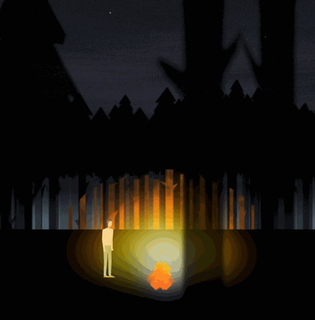

山海Campfire
Chat App 山海
2017/12/31 by DKZ
蔻德：
我觉得我更喜欢最开始的样子。我独自躺在躺在空荡的房间，望着天花板，心里想着你和人生的意义。我觉得有那么一瞬间我与你感同身受，有那么一瞬间我找到了那个意义，我想告诉你。
这一刻的灵感，变成一种执念，最后变成了《山海》。完成它是半年之后，已不是当时的语境了。可能有点空洞，走过山川湖海，昼夜四季，最后见到你，但这就是它本来的样子了。不知道是否能传达我的心意，我也不知道该说些什么，那就变成风声雨声散落山海里吧。
你有听到么？山谷里的回声。亦或是被波涛声淹没，石沉大海。重新站在人生的广原，有无数条路可以走，还是只有一条路，我脚下的这一条。好像也没太多的选择，在开始动念的时候路就在那了。放弃确实有点难，我决定继续向前，像布做的那样，翻山过海。
转眼又是一年，这一年比上一年又走远了一些。我增加了一个场景，深夜的丛林，温暖的篝火，一个可以歇脚的地方。依旧是孤独的旅程，我觉得路上应该发生一些什么，我想写个故事，但写不出来，一个讲故事的人没有故事只有表达欲。最后《山海》变成了一个聊天应用，给那些和我一样的陌生人。我希望在某个孤独的时刻，你能打开它，恰好有另一个孤独的人，在这等你，告诉你你并不孤单。也许这个人没有出现，世上的事大抵如此。你最终会遇到一个没有故事的人，悲伤时刻的我，或心碎的你，在一个凝固的时空里相遇。这已不是我最开始的设想了，这一年失望过，迷茫过，告别过，也有幸运过。更多是平常的日子，感谢你的陪伴。
蔻德，你依旧是我黑夜里的光和《山海》永远的女主角。希望我能点燃篝火，如你一般照亮前路。我想这就是意义了吧？于是给你写了信。我想告诉你，这不是没有意义的，这对我来说意义重大。你在我人生的灰暗时刻。照亮过我。
啵啵
布
2018/1/4
